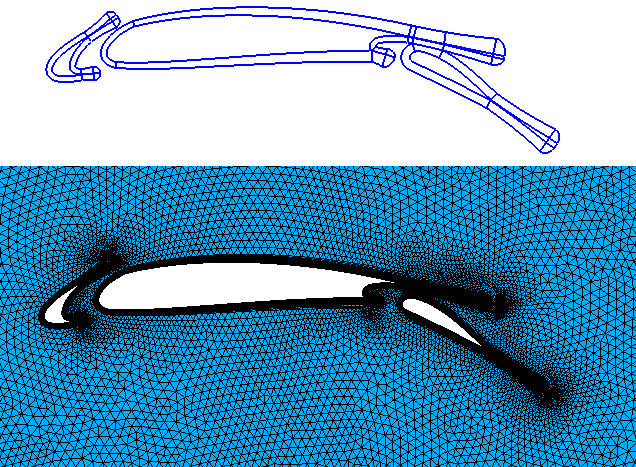
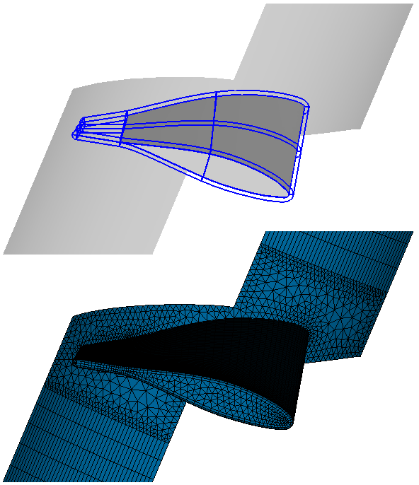

Content of this section:

 cfdmsh 4.0 documentation
cfdmsh 4.0 documentation cfdmsh 4.0 documentation


Content of this section:

Salome Platform is a powerful opensource tool for CAD and CFD meshing. However, it has some limitations that cfdmsh tries to overcome in the context of viscous studies in which the viscous layers have to be meshed with high attention.
From the 6.4.0 version of Salome, it is possible to create automatic prismatic layers using the basic tools of Salome. These tools are sufficient for basic viscous layer meshing. Nonetheless, engineers who want to totally master the design of their viscous layer around foils may prefer to use cfdmsh instead. The philosophy of cfdmsh is to create the precise shape of the viscous layer in the geometry, instead of creating first a mesh and generating the prismatic layer at the very last step.
The first aim of cfdmsh is to allow the creation in few steps of 2D "C" or "O" grids around foils, extended behind it to have a smoother transition between the viscous layer meshing and the rest of the mesh. Nevertheless, some 3D functions, which allow to create 3D viscous layers around wings or blades, are also available. (See the related tutorials or cfdmsh functions.)
Also, reconstruction tools were also implemented so as to prepare imported 3D geometries for meshing in Salome, especially when there are undesired sub-shapes after import. (See the related tutorial or cfdmsh functions.)
But besides, cfdmsh offers additional useful functions which speed up the use of Salome in any case, like the group, mesh configuration and mesh hypothesis import/export. (See the related tutorials or cfdmsh functions for group or mesh management.)
Nonetheless, interaction with the Python console when using the Salome GUI is much accelerated using cfdmsh, since it provides flexible and easy-to-use functions to publish or get existing objects in the Salome study tree. (See the related tutorial or cfdmsh functions.)
Finally, cfdmsh allows to export meshes in Edge 5.0.0 and SU2 4.0.0 formats, making Salome compatible with these solvers. (See the related cfdmsh functions.)
The cfdmsh library has been designed to be easily used directly from the Salome GUI, through the Python console, but cfdmsh can also be used into python scripts like any other library. (See the related section.)
Here some screenshots of what can be expected using cfdmsh. The realization of these examples in Salome without using cfdmsh would have been endless and laborious. With cfdmsh, it takes from few minutes to few hours:
- 2D viscous layer blocking around a high-lift wing:

- 3D viscous layer blocking with tip closure around a twisted blade:

cfdmsh 4.0 documentation
tougeron-cfd.com © 2016